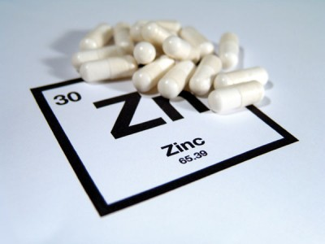

ZINC:

El cinc es un metal, a veces clasificado como metal de transición aunque estrictamente no lo sea, ya que tanto el metal como su especie dispositiva presentan el conjunto orbital completo. Este elemento presenta cierto parecido con el magnesio, y con el cadmio de su grupo, pero del mercurio se aparta mucho por las singulares propiedades físicas y químicas de éste (contracción lantánida y potentes efectos relativistas sobre orbitales de enlace). Es el 23º elemento más abundante en la Tierra y una de sus aplicaciones más importantes es el galvanizado del acero.
 Ir a página principal
Ir a página principal